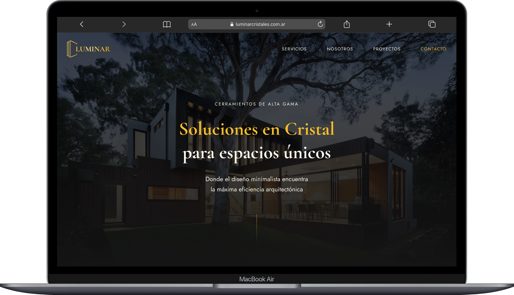
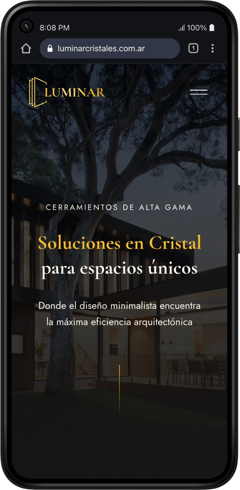

Identidad visual y desarrollo frontend para una empresa de cerramientos de alta gama. El foco estuvo en alejar a la marca del rubro industrial tradicional y posicionarla en el sector de la arquitectura premium mediante un diseño limpio y animaciones fluidas.


Al analizar el mercado, noté que la competencia mantenía una estética de "metalúrgica tradicional", con interfaces saturadas de información técnica y llamados a la acción repetitivos. Para Luminar, el enfoque fue opuesto: diseñé una identidad visual orientada a la arquitectura de alta gama.
Desde las piezas corporativas hasta la web, la premisa fue dejar de vender perfiles de aluminio y empezar a comunicar integración espacial y estilo de vida, conectando directamente con estudios de arquitectura y clientes residenciales exigentes.
Rol
Branding, UX/UI Design & Frontend Developer.
Alcance
Análisis de competencia, identidad visual, desarrollo web.
Herramientas
Figma, Illustrator, Vite, Tailwind CSS, GSAP, Resend.
La interfaz refleja la calidad premium de la marca mediante un ecosistema oscuro y el uso de tipografía editorial (Cormorant Garamond). Agregué detalles visuales funcionales, como efecto glassmorphism en la navegación al hacer scroll y destellos ocres en los estados hover, emulando los reflejos del cristal.
Desarrollé el sitio con Vite y Tailwind CSS. Para la sección de servicios complementarios, evité un scroll excesivo implementando animaciones con GSAP. Mediante scroll pinning, logré que los distintos sistemas transicionen suavemente en el mismo bloque. Finalmente, la lógica del formulario se resolvió integrando Resend.
Propuesta visual completa y manual de identidad para el desarrollo de la plataforma de cerramientos de alta gama.